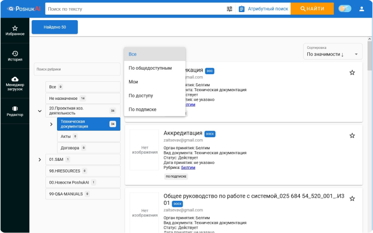
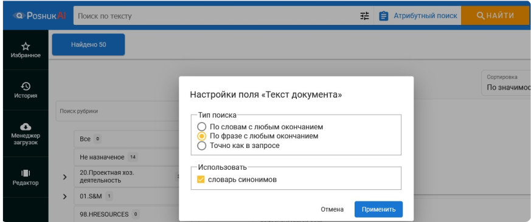
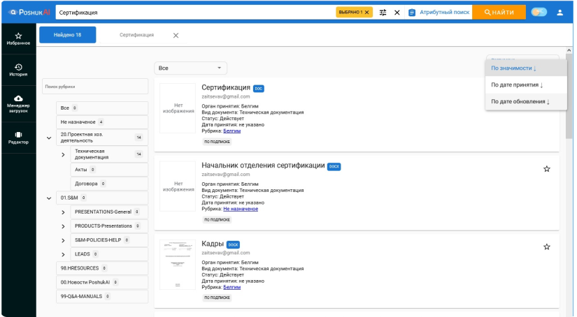
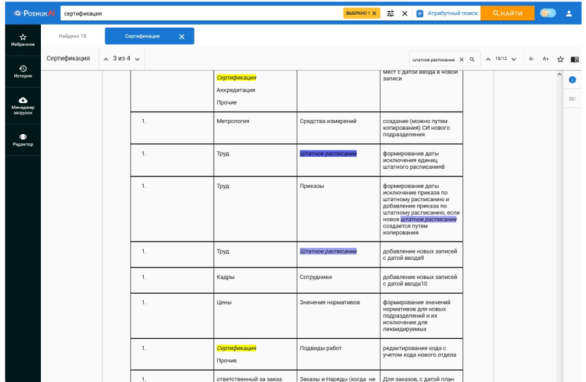
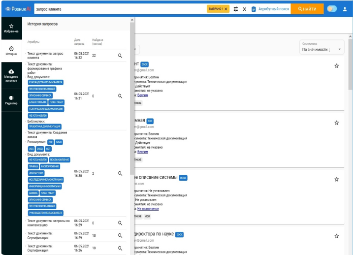

Полнотекстовый поиск PoshukAI, организация корпоративного поиска документов организации и системы полнотекстового поиска
Классификация документов учета организации PoshukAI, корпоративные системы полнотекстового поиска. Полнотекстовый поиск PoshukAI – корпоративная поисковая система
Попробовать бесплатноКорпоративный поиск информации
Поисковая система PoshukAI делает накопленную информацию удобно и быстро доступной для любых сотрудников, в соответствии с правами доступа к документам организации и личными правами сотрудников.
Полнотекстовый поиск
С помощью поисковой системы PoshukAI вы сможете быстро найти документ по словам в его содержании. Поиск можно настроить согласно пожеланиям пользователя: поиск заданной фразы по словам с любым окончанием, по фразе с любым окончанием, точно, как в запросе, и используя синонимы.
Подсказки при поиске информации
При вводе поискового запроса система предложит варианты, как точнее сформулировать запрос, чтобы быстрее найти важное. Вместо ввода полной фразы в запросе можно выбрать уже готовый вариант из подсказки.
Работа с результатами поиска
Если результаты выполнения запроса включают большое количество документов, можно уменьшить охват поиска с помощью рубрикатора документов, фильтра по правам доступа к документам. Результаты также можно сортировать по значимости документа, по дате принятия и дате обновления.
Внутренний поиск в документе
Выполняет дополнительный внутренний поиск в документе уточняющего характера, например, в затруднительных случаях локализации требуемого текста.
История поисковых запросов пользователя
Ведется история всех поисковых запросов каждого пользователя системы. Используется навигация по прежним поисковым запросам. Можно повторить любой запрос, выбрав его из истории.
